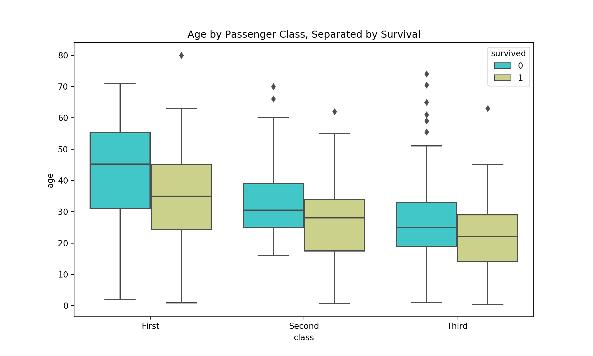
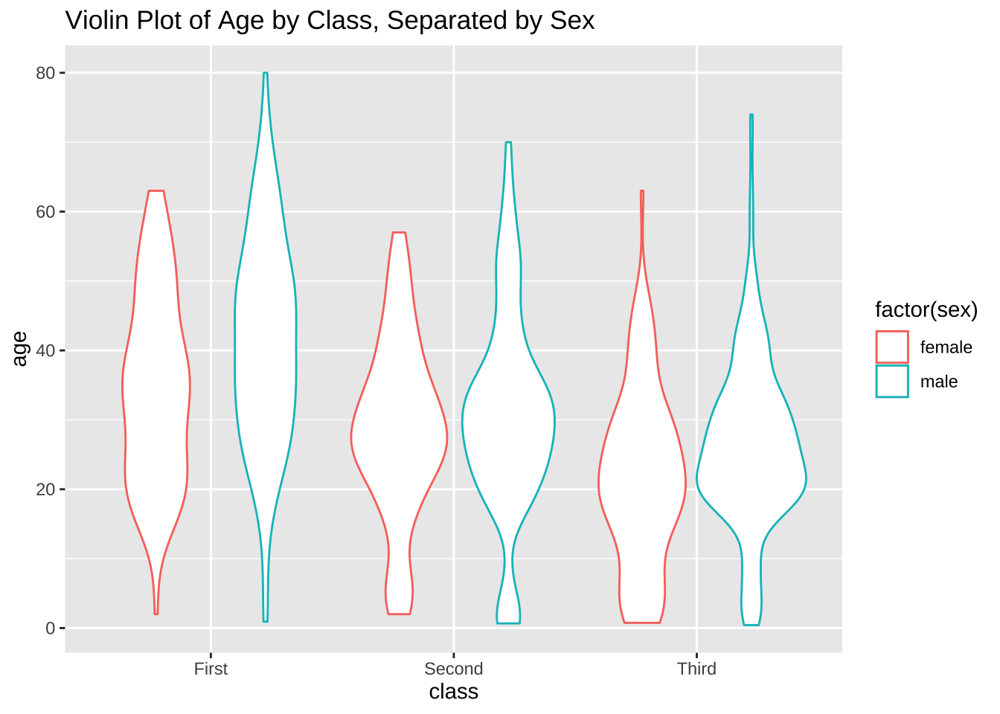
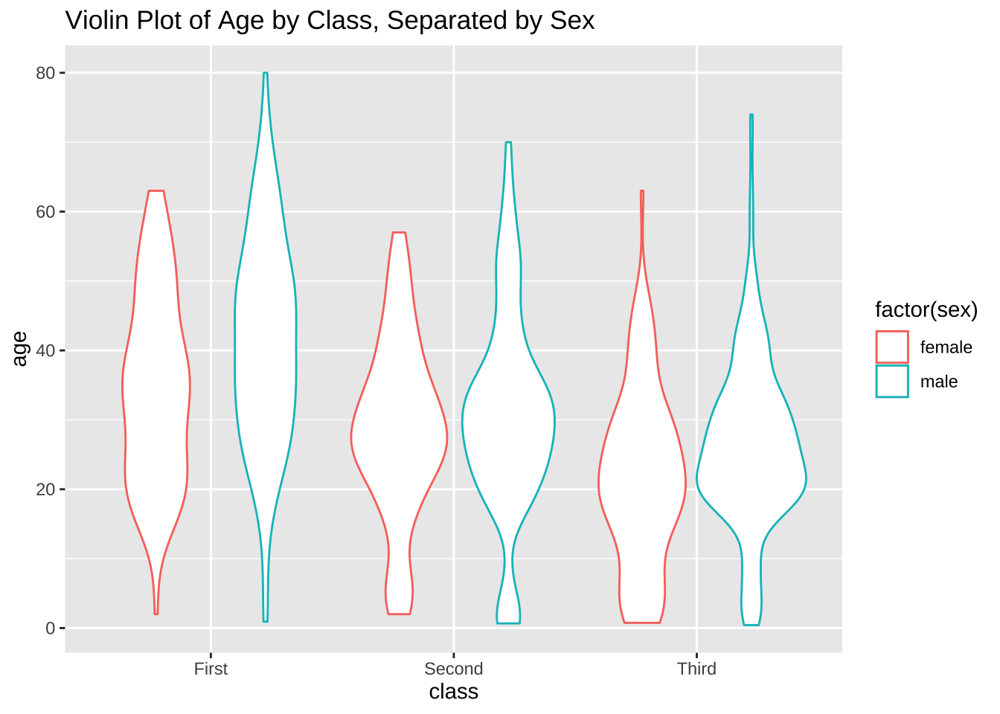
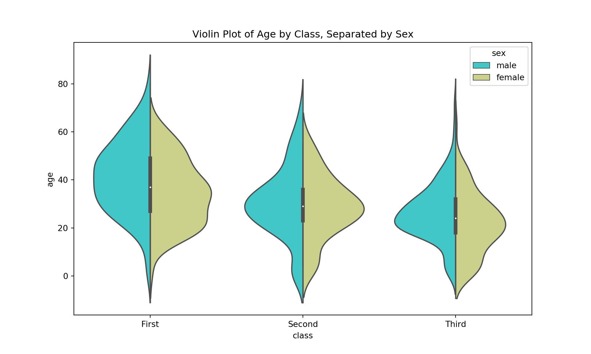
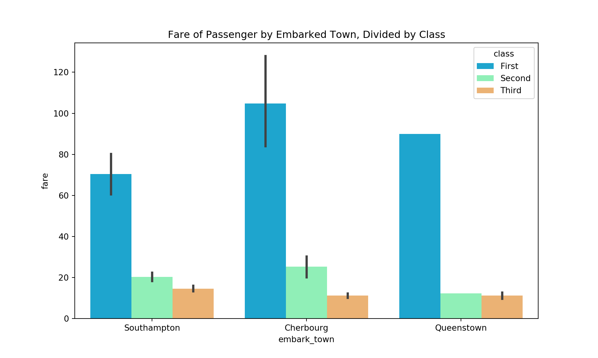
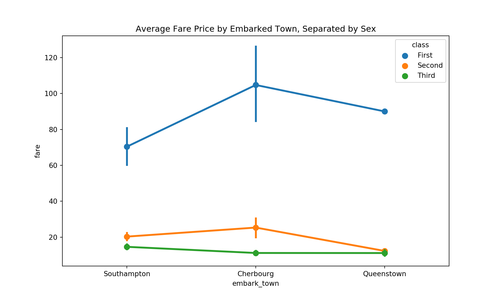
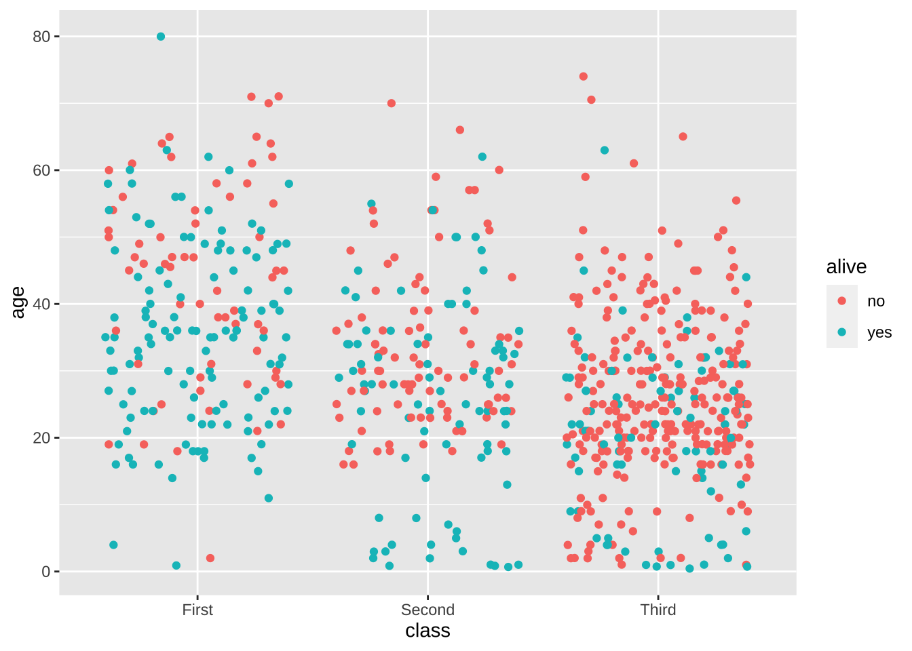
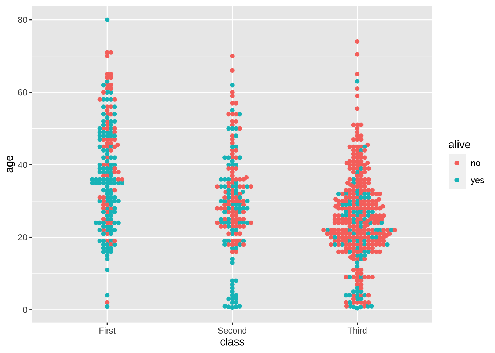
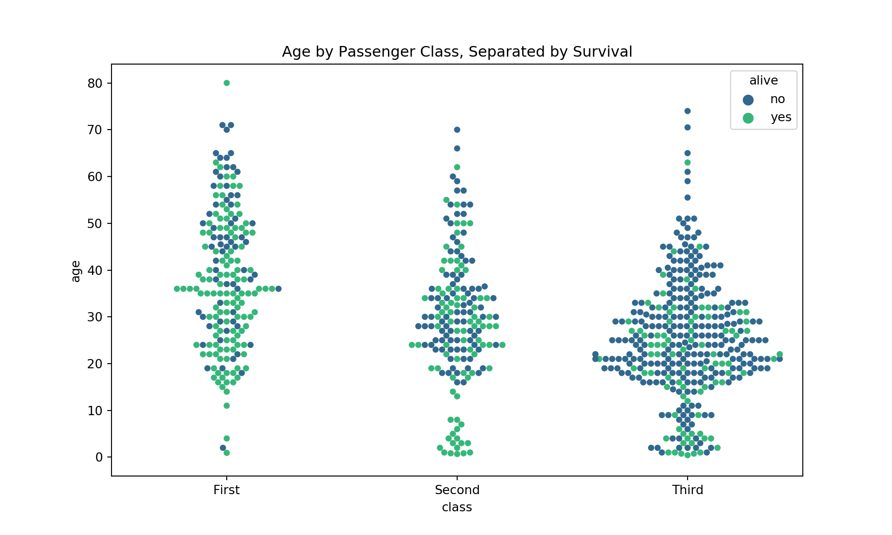

A Complete Guide to Plotting Categorical Variables
See how Seaborn & ggplot2 can make your plots looks nicer, convey more info, and require few lines of code.

Mohammad Hossein Malekpour
Mohammad Hossein Malekpour
Instructions:
In this Dotto we will use Titanic dataset. This dataset is great because it has a decent number of entries — almost 900 — while also having an interesting story to dig into. There are lots of questions to ask and relationships between variables to explore making it a great example data set. Most critical for this article is that there is also a good mix of numerical and categorical variables to explore. In this Dotto we will see: - Categorical Distribution Plots We have two different kinds of categorical distribution plots, box plots and violin plots. These kinds of plots allow us to choose a numerical variable, like age, and plot the distribution of age for each category in a selected categorical variable. - Categorical Estimate Plot - Categorical Scatter Plots Both strip plots and swarm plots are essentially scatter plots where one variable is categorical. I like to use them as additions to other kinds of plots, which we’ll discuss as they are useful for quickly visualizing the number of data points in a group.
In this Dotto we will use one of Seaborn’s conveniently available datasets about the Titanic, which I’m sure many readers have seen before. Seaborn has quite a few datasets ready to be loaded into Python to practice with; they are great for practicing data processing, exploration, and basic machine learning techniques. This data set is great because it has a decent number of entries — almost 900 — while also having an interesting story to dig into. There are lots of questions to ask and relationships between variables to explore making it a great example data set. Most critical for this article is that there is also a good mix of numerical and categorical variables to explore. In this Dotto we will see: - Categorical Distribution Plots We have two different kinds of categorical distribution plots, box plots and violin plots. These kinds of plots allow us to choose a numerical variable, like age, and plot the distribution of age for each category in a selected categorical variable. - Categorical Estimate Plot - Categorical Scatter Plots Both strip plots and swarm plots are essentially scatter plots where one variable is categorical. I like to use them as additions to other kinds of plots, which we’ll discuss as they are useful for quickly visualizing the number of data points in a group.
Codes:
# There are a few lines of code that you'll need to run at the top of every notebook to set up your coding environment.
library(readr) # Read tabular data.
library(dplyr) # General data frame manipulation.
library(ggplot2) # Flexible plotting.
# Path of the file to read
auto_filepath <- "data/titanic.csv"
# Read the file into a variable titanic.csv
titanic <- read.csv(auto_filepath)
# Print the five random rows of the data
knitr::kable(sample_n(titanic, 5))# Import the libraries
import numpy as np
import pandas as pd
import seaborn as sns
from matplotlib import pyplot as plt
titanic = sns.load_dataset('titanic')
titanic.info()Results:
| X | survived | pclass | sex | age | sibsp | parch | fare | embarked | class | who | adult_male | deck | embark_town | alive | alone |
|---|---|---|---|---|---|---|---|---|---|---|---|---|---|---|---|
| 804 | 1 | 3 | male | 27 | 0 | 0 | 6.9750 | S | Third | man | True | Southampton | yes | True | |
| 726 | 1 | 2 | female | 30 | 3 | 0 | 21.0000 | S | Second | woman | False | Southampton | yes | False | |
| 715 | 0 | 3 | male | 19 | 0 | 0 | 7.6500 | S | Third | man | True | F | Southampton | no | True |
| 619 | 0 | 2 | male | 26 | 0 | 0 | 10.5000 | S | Second | man | True | Southampton | no | True | |
| 859 | 0 | 3 | male | NA | 0 | 0 | 7.2292 | C | Third | man | True | Cherbourg | no | True |
## <class 'pandas.core.frame.DataFrame'>
## RangeIndex: 891 entries, 0 to 890
## Data columns (total 15 columns):
## survived 891 non-null int64
## pclass 891 non-null int64
## sex 891 non-null object
## age 714 non-null float64
## sibsp 891 non-null int64
## parch 891 non-null int64
## fare 891 non-null float64
## embarked 889 non-null object
## class 891 non-null category
## who 891 non-null object
## adult_male 891 non-null bool
## deck 203 non-null category
## embark_town 889 non-null object
## alive 891 non-null object
## alone 891 non-null bool
## dtypes: bool(2), category(2), float64(2), int64(4), object(5)
## memory usage: 80.6+ KBInstructions:
Box Plots
Many of us have probably made quite a few box plots over the years. They are an easy and effective way to visualize groups of numerical data through their quartiles. Seaborn makes creating attractive box plots simple and allows us to easily compare an extra dimension with the hue argument that appears in many Seaborn functions. Basic Boxplot Lets take a look at distribution of age by passenger class. We can see that age tends to decrease as you go down in passenger class. That makes sense, young people tend to travel on a budget. Adding colour Like many other plots available in ggplot, geom_boxplot can take an added colour argument to add another variable for comparison. Adding the hue shows us that regardless of class the age of passengers that survived was generally lower than those who passed away. Having the colour for additional comparison allows this box plot to be quite information dense. The more complex the plot gets the longer it will take for viewers to comprehend it, but it is nice to have the option when interesting insights are more easily shown with an added dimension.
Box Plots
Many of us have probably made quite a few box plots over the years. They are an easy and effective way to visualize groups of numerical data through their quartiles. Seaborn makes creating attractive box plots simple and allows us to easily compare an extra dimension with the hue argument that appears in many Seaborn functions. Basic Boxplot Lets take a look at distribution of age by passenger class. We can see that age tends to decrease as you go down in passenger class. That makes sense, young people tend to travel on a budget. Adding Hue Like many other plots available in Seaborn, box plots can take an added hue argument to add another variable for comparison. Adding the hue shows us that regardless of class the age of passengers that survived was generally lower than those who passed away. Having the hue for additional comparison allows this box plot to be quite information dense. The more complex the plot gets the longer it will take for viewers to comprehend it, but it is nice to have the option when interesting insights are more easily shown with an added dimension.
Codes:
# Basic boxplot
ggplot(titanic,
aes(class, age)) +
geom_boxplot()+
ggtitle("Age by Passenger Class, Titanic")
# Adding colour
ggplot(titanic,
aes(class, age)) +
geom_boxplot(aes(colour = factor(survived)))+
ggtitle("Age by Passenger Class, Separated by Survival")# Basic Boxplot
plt.figure(figsize=(10, 6))
sns.boxplot(x='class', y='age', data=titanic, palette='rainbow')
plt.title("Age by Passenger Class, Titanic")
# Adding Hue
plt.figure(figsize=(10, 6))
sns.boxplot(x='class', y='age', data=titanic, palette='rainbow', hue='survived')
plt.title("Age by Passenger Class, Separated by Survival")Results:



Instructions:
Violin Plots
Violin plots are not very frequently used but I have found them to be useful on occasion, and they are an interesting change from more popular options. They plot a vertical kernel density plot for each category and a small box plot to summarize important statistics.
Violin Plots
Violin plots are not very frequently used but I have found them to be useful on occasion, and they are an interesting change from more popular options. They plot a vertical kernel density plot for each category and a small box plot to summarize important statistics. While I like this plot, I think it is easier to compare the genders with slightly different formatting: When we split the violin on the hue it is a lot easier to see the differences in each KDE. However, the IQR stats aren’t split by the sex anymore; instead they apply to the entire class. So there are trade-offs to styling your plot in certain ways.
Codes:
# Basic violinplot
ggplot(titanic,
aes(class, age)) +
geom_violin() +
ggtitle("Violin Plot of Age by Class")
# Adding colour
ggplot(titanic,
aes(class, age)) +
geom_violin(aes(colour = factor(sex))) +
ggtitle("Violin Plot of Age by Class, Separated by Sex")# Basic Violinplot
plt.figure(figsize=(10,6))
sns.violinplot(x='class',y="age",data=titanic, hue='sex', palette='rainbow')
plt.title("Violin Plot of Age by Class, Separated by Sex")
# Adding Split
plt.figure(figsize=(10, 6))
sns.violinplot(x='class', y="age", data=titanic, hue='sex', split='True', palette='rainbow')
plt.title("Violin Plot of Age by Class, Separated by Sex")Results:
 


Instructions:
TBD
Boxen Plot
The boxen plot, otherwise known as a Letter-value plot, is a box plot meant for large data sets (n > 10,000). It is similar to a traditional box plot, however it essentially just plots more quantiles. With more quantiles, we can see more info about the distribution shape beyond the central 50% of the data; this extra detail is especially present in the tails, where box plots tend to give limited information. Just in case there still isn’t enough going on here for you, we can also add a hue to a boxen plot! We can see that the boxen plot gives us much more information beyond the central 50% of the data. However, keep in mind that boxen plots are meant for larger data sets with entries between 10,000 and 100,000. This data set of under 1,000 entries is definitely not ideal. Here is a link to the paper where boxen plots were created that explains them very well.
Codes:
# TBD# Basic Boxenplot
plt.figure(figsize=(10, 6))
sns.boxenplot(x='class', y='age', data=titanic, palette='rainbow')
plt.title("Distribution of Age by Passenger Class")
# Adding Hue
plt.figure(figsize=(10, 6))
sns.boxenplot(x='class', y='age', data=titanic, palette='rainbow', hue='survived')
plt.title("Distribution of Age by Passenger Class, Separated by Survival")Results:

Instructions:
Bar Plot
Bar charts are useful for comparing quantities corresponding to different groups. There are two types of bar charts: geom_bar() and geom_col(). geom_bar() makes the height of the bar proportional to the number of cases in each group (or if the weight aesthetic is supplied, the sum of the weights). If you want the heights of the bars to represent values in the data, use geom_col() instead. Check the documentation for more details.
Bar Plot
Bar plots are classic. You get an estimate of central tendency for a numerical variable for each class on the x axis. Say we were interested in knowing the average fare price of passengers that embarked from different towns. Seaborn will take the mean as default, but you can use other measures of central tendency as well. There is a noticeable difference between Cherbourg and the other two, let’s separate the bars by class to see who was boarding in each town. Now we can see that the average fare price in Cherbourg was so high due to some very expensive first class tickets. The large error bar on the fare price in first class from Cherbourg is also interesting; that could mean there is a lot of separation between some very high price outlier tickets and the rest.
Codes:
ggplot(data = titanic,
aes(x = embark_town,
y = fare)) +
geom_col(aes(fill = factor(class))) +
ggtitle("Fare of Passenger by Embarked Town, Divided by Class")# Basic Barplot
plt.figure(figsize=(10, 6))
sns.barplot(x='embark_town', y='fare', data=titanic, palette='rainbow')
plt.title("Fare of Passenger by Embarked Town")
# Adding Hue
plt.figure(figsize=(10, 6))
sns.barplot(x='embark_town', y='fare', data=titanic, palette='rainbow', hue='class')
plt.title("Fare of Passenger by Embarked Town, Divided by Class")Results:


Instructions:
TBD
Point Plot
Point plots convey the same information as a bar plot with a different style. They can be good for overlaying with different plots since they have a smaller footprint in the space.
Codes:
# TBD# Basic Pointplot
plt.figure(figsize=(10, 6))
sns.pointplot(x='embark_town',y='fare',data=titanic)
plt.title("Average Fare Price by Embarked Town")
# Adding Hue
plt.figure(figsize=(10, 6))
sns.pointplot(x='embark_town', y='fare', data=titanic, hue='class')
plt.title("Average Fare Price by Embarked Town, Separated by Sex")Results:

Instructions:
TBD
Count Plot
Count Plots are essentially histograms across a categorical variable. They take all the same arguments as bar plots in Seaborn, which helps keep things simple.
Codes:
ggplot(titanic,
aes(embark_town)) +
geom_bar(aes(fill = factor(sex)))# Basic Countplot
plt.figure(figsize=(10, 6))
sns.countplot(x='embark_town', data=titanic, palette='rainbow')
plt.title("Count of Passengers that Embarked in Each City")
# Adding Hue
plt.figure(figsize=(10, 6))
sns.countplot(x='embark_town', data=titanic, palette='rainbow', hue='sex')
plt.title("Count of Passengers that Embarked in Each City, Separated by Sex")Results:

Instructions:
TBD
jitter geom
The jitter geom is a convenient shortcut for geom_point(position = “jitter”). It adds a small amount of random variation to the location of each point, and is a useful way of handling overplotting caused by discreteness in smaller datasets.
Codes:
ggplot(titanic, aes(class, age)) +
geom_jitter(aes(colour = alive))plt.figure(figsize=(10, 6))
sns.stripplot(x='class', y='age', data=titanic, jitter=True, hue='alive', dodge=True, palette='viridis')Results:


Instructions:
Bee Swarm Plot
Create a bee swarm plot. A bee swarm plot is a one-dimensional scatter plot similar to stripchart, but with various methods to separate coincident points such that each point is visible. Also, beeswarm introduces additional features unavailable in stripchart, such as the ability to control the color and plotting character of each point.
Swarm Plot
Swarm plots are fantastic because they offer an easy way to show the individual data points in a distribution. Instead of a big blob like the strip plot, the swarm plot simply adjusts the points along the x-axis. Although they also don’t scale well with tons of values, they offer more organized insight. Here we can more easily see where the dense age groups are rather than the difficult to interpret strip plot above.
Codes:
library(ggbeeswarm)
ggplot(titanic, aes(class, age, col = alive)) + geom_beeswarm()plt.figure(figsize=(10, 6))
sns.swarmplot(x='class', y='age', data=titanic, hue='alive', dodge=True, palette='viridis')
plt.title("Age by Passenger Class, Separated by Survival")Results:

